2. Resumen Ejecutivo
El presente documento detalla la ejecución de una prueba de concepto (PoC) enfocada en la simulación de una campaña de phishing utilizando Social-Engineer Toolkit (SET). El objetivo principal de esta práctica es demostrar cómo un atacante puede aprovechar servicios legítimos de retransmisión SMTP (en este caso, Brevo) para falsificar la identidad de un remitente corporativo ("Soporte Técnico") y enviar correos electrónicos engañosos.
A través de este ejercicio, se evalúa la efectividad de los filtros de correo no deseado actuales y se exponen las vulnerabilidades asociadas con la ingeniería social, concluyendo con recomendaciones estratégicas para mitigar este vector de ataque en entornos organizacionales.
3. Alcance (Scope)
Esta simulación está estrictamente limitada a un entorno de pruebas controlado con fines académicos y de concienciación en ciberseguridad.
- Vectores evaluados: Envío de correo electrónico falsificado (E-mail Spoofing) mediante Mass Mailer Attack en SEToolkit.
- Herramientas utilizadas: Kali Linux, Social-Engineer Toolkit (SET), y el servicio de SMTP Relay gratuito de Brevo.
- Objetivos: Un buzón de correo de prueba predeterminado para auditar la recepción y clasificación del mensaje malicioso. No se interactuó con infraestructura crítica, ni se recolectaron credenciales reales de terceros.
4. Metodología aplicada
Para la realización de esta prueba de concepto, se siguió una metodología de auditoría de caja blanca (White-box) estructurada en las siguientes fases:
- Preparación de Infraestructura: Registro y verificación de una cuenta en Brevo utilizando el correo remitente (soporte.interno2026@gmail.com) para validar la identidad ante el servicio de relay y asegurar el paso de los correos.
- Configuración del Payload: Uso de SEToolkit en Kali Linux para orquestar el ataque, seleccionando plantillas predefinidas que apelan al sentido de urgencia del usuario.
- Ejecución (Delivery): Inyección de los parámetros de falsificación (remitente falso) y credenciales SMTP en SEToolkit para realizar el envío hacia el objetivo.
- Análisis de Resultados: Verificación de la bandeja de entrada del objetivo para evaluar el comportamiento del proveedor de correo (filtrado, advertencias, clasificación en Spam).
5. Desarrollo de la Práctica: Creando una Campaña de Phishing con SET
Para llevar a cabo el ataque simulado, el primer paso fundamental es la preparación de la plataforma de envío. Un paso crítico en esta fase es registrarnos en Brevo utilizando exactamente la misma dirección de correo que planeamos usar para el ataque: soporte.interno2026@gmail.com.
Al completar el registro y la verificación, Brevo identifica esta dirección como legítima y autorizada dentro de su plataforma. Esto nos permite utilizar su infraestructura para mandar el correo de phishing, ya que el servicio "ve" que el remitente está verificado y permite que el mensaje pase sus controles iniciales de seguridad.
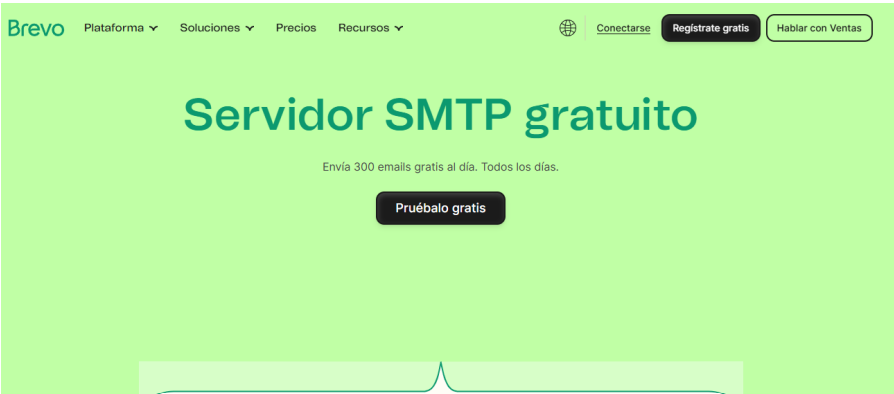
Lo primero que haremos será ubicar e iniciar nuestra herramienta en nuestro entorno de ataque. En Kali Linux, abrimos el menú de aplicaciones, buscamos setoolkit y lo seleccionamos.
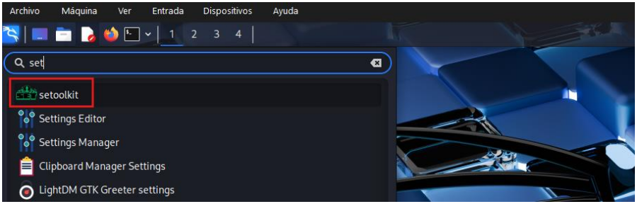
Aquí abrimos la terminal y ejecutamos la herramienta con privilegios de superusuario escribiendo el comando sudo setoolkit. Acto seguido, ingresamos la contraseña de nuestra cuenta root (kali) para autorizar la ejecución.
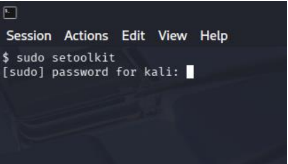
Una vez iniciada la herramienta, el sistema nos muestra los términos de servicio. Escribimos la letra "y" (yes) y presionamos Enter para aceptar y continuar.
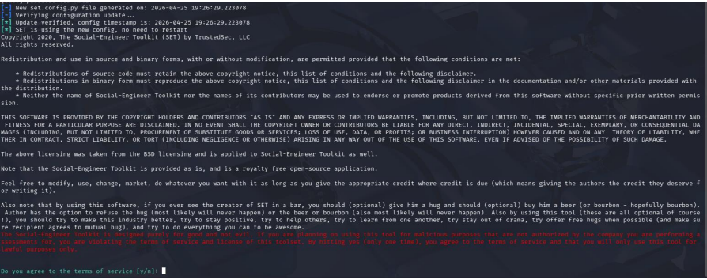
En el menú principal de The Social-Engineer Toolkit, seleccionamos la opción 1 correspondiente a Social-Engineering Attacks (Ataques de Ingeniería Social).
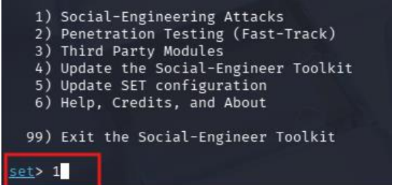
Posteriormente, dentro del menú de vectores de ataque, elegimos la opción 5 para acceder al módulo Mass Mailer Attack (Ataque de envío masivo de correos).
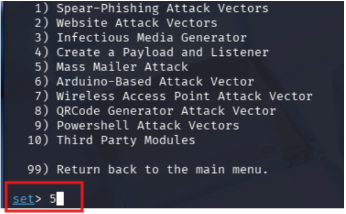
A continuación, la herramienta nos pregunta si deseamos enviar el correo a un objetivo individual o a una lista. Elegimos la opción 1, E-Mail Attack Single Email Address, para dirigir nuestro ataque a un solo buzón de prueba.
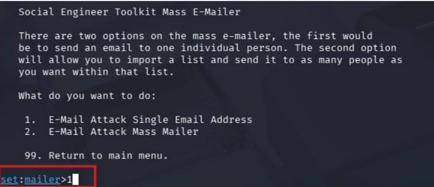
Para el cuerpo del mensaje, optamos por utilizar los recursos incluidos en SET. Seleccionamos la opción 1 para usar una Pre-Defined Template (Plantilla predefinida).
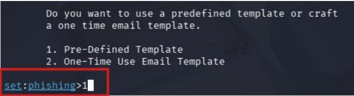
De la lista de plantillas disponibles, escribimos 5 para seleccionar "Have you seen this?" (¿Has visto esto?). Esta plantilla es efectiva porque genera curiosidad y preocupación en el receptor, motivándolo a interactuar con el mensaje.
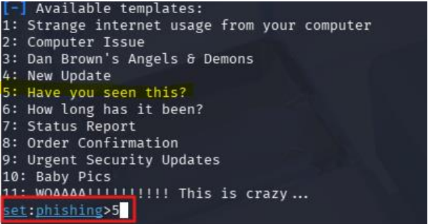
Para que SET pueda enviar el correo a través del servidor legítimo, necesitamos credenciales de acceso. Nos dirigimos al panel de configuración de Brevo, en la sección de "SMTP y API", y hacemos clic en el botón "Generar una nueva clave SMTP".
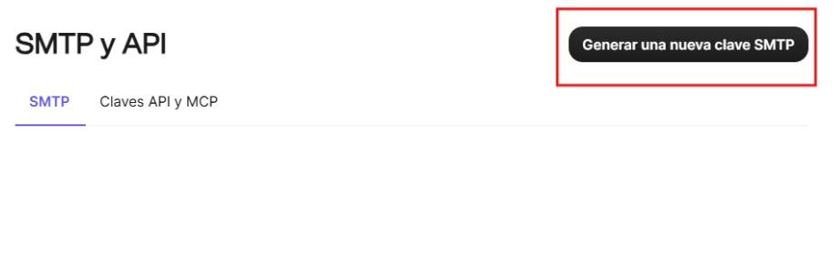
Asignamos un nombre identificativo a nuestra clave, en este caso la nombramos "Ataque", dejamos la variante estándar y damos clic en Generar.
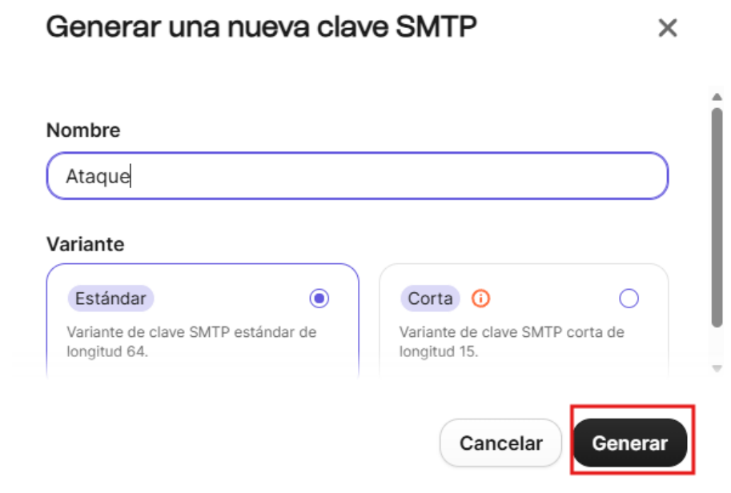
La plataforma nos arrojará una contraseña extensa y segura. Es crucial copiar y respaldar esta clave generada, ya que la utilizaremos como nuestra contraseña de autenticación SMTP en la terminal.
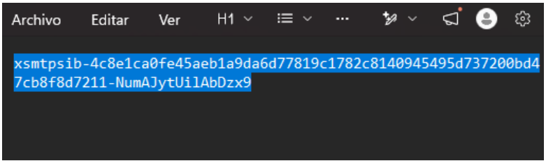
Teniendo a la mano los datos de configuración proporcionados por Brevo (Servidor SMTP: smtp-relay.brevo.com, Puerto: 587, y nuestro usuario de inicio de sesión), regresamos a la terminal de Kali.
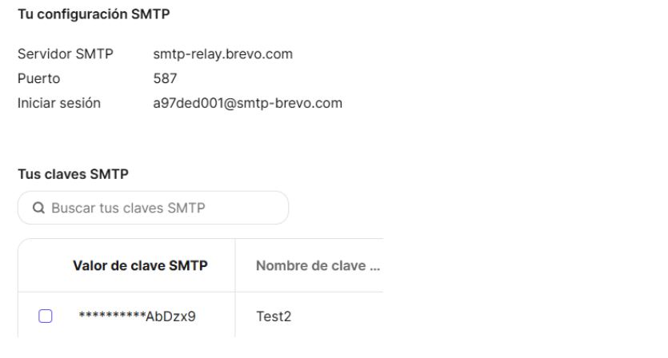
En este paso configuramos los parámetros finales del ataque en SEToolkit:
- From address: Definimos el correo falso que queremos que la víctima vea, por ejemplo: soporte.interno2026@gmail.com.
- FROM NAME: Colocamos el alias Soporte Tecnico para dar legitimidad.
- Username / Password for open-relay: Ingresamos nuestro usuario de Brevo y pegamos la clave SMTP generada en los pasos anteriores.
- SMTP email server address & Port: Colocamos smtp-relay.brevo.com y el puerto 587.
- Finalmente, indicamos que no deseamos bandera de alta prioridad ni adjuntar archivos (no / n). SET finalizará el proceso y enviará el correo con éxito.
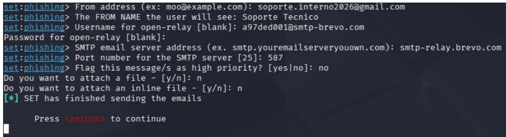
Por último, revisamos el buzón de la cuenta objetivo. Comprobamos que el correo fue recibido exitosamente; sin embargo, las políticas de seguridad del proveedor de correo electrónico detectaron la anomalía en las cabeceras y clasificaron correctamente el mensaje en la carpeta de "Correo no deseado", mostrando advertencias de seguridad al usuario.
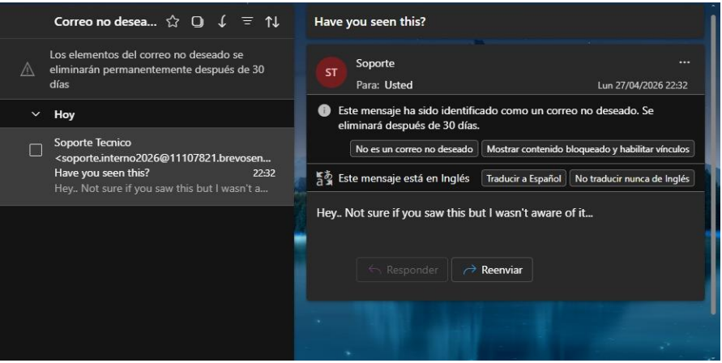
6. Análisis de impacto (modelo CIA)
Si un ataque de esta naturaleza logra evadir los filtros de spam y engaña a un empleado para que interactúe con el mensaje, el impacto en la organización, evaluado bajo la tríada CIA, es el siguiente:
- Confidencialidad (Alto): Es el pilar más comprometido en el phishing. Si el usuario proporciona sus credenciales en un portal falso, el atacante obtiene acceso no autorizado a sistemas internos, información sensible, datos de clientes o propiedad intelectual.
- Integridad (Medio - Alto): Con credenciales comprometidas o si el correo incluye una carga útil (payload) maliciosa, el atacante podría modificar registros, alterar configuraciones de red, o escalar privilegios dentro de la infraestructura corporativa, corrompiendo la fiabilidad de la información.
- Disponibilidad (Medio): Si el phishing es el vector de entrada para un ataque de Ransomware, los sistemas críticos y líneas de producción podrían ser cifrados, interrumpiendo las operaciones de la empresa y causando tiempo de inactividad significativo.
7. Recomendaciones técnicas
Para mitigar el riesgo asociado a la suplantación de identidad y las campañas de phishing, se recomienda implementar los siguientes controles:
- Configuración de Registros de Autenticación de Correo: Implementar de manera estricta los protocolos SPF (Sender Policy Framework), DKIM (DomainKeys Identified Mail) y DMARC (Domain-based Message Authentication, Reporting, and Conformance). Esto asegurará que los dominios corporativos no puedan ser suplantados fácilmente por herramientas externas y ayudará a que los servidores destino rechacen correos falsificados.
- Plataformas de Simulación y Concientización: El error humano es la principal vulnerabilidad en la ingeniería social. Es imperativo desplegar campañas internas continuas utilizando plataformas especializadas (como KnowBe4, Proofpoint o Cofense) para entrenar al personal en la identificación de correos sospechosos y medir el nivel de madurez de la organización ante estas amenazas.
- Seguridad Perimetral de Correo (Secure Email Gateway - SEG): Reforzar las políticas del gateway de correo electrónico para analizar anomalías en las cabeceras (Header Analysis), bloquear dominios recién creados y aplicar sandboxing a enlaces y archivos adjuntos sospechosos antes de que lleguen a la bandeja de entrada del usuario.
- Autenticación Multifactor (MFA): Requerir MFA obligatorio para todos los accesos a sistemas críticos. De este modo, incluso si el phishing logra vulnerar la confidencialidad de la contraseña, el atacante no podrá materializar el acceso sin el segundo factor de autenticación.
8. Tabla de Hallazgos
| ID | Hallazgo | Riesgo | Descripción | Mitigación |
|---|---|---|---|---|
| H-01 | Uso de Relay Verificado | Alto | El atacante usó una cuenta verificada en Brevo para saltar bloqueos de IP. | Bloqueo de dominios de relay gratuitos en el firewall corporativo. |
| H-02 | Suplantación de Nombre | Medio | El alias "Soporte Tecnico" induce a error al usuario. | Implementar etiquetas de "Remitente Externo" en el cliente de correo. |
| H-03 | Plantillas de Urgencia | Medio | Uso de frases como "¿Has visto esto?" para forzar el clic. | Programas de concienciación en seguridad de la información. |
Referencias Bibliográficas
- TrustedSec. (n.d.). The Social-Engineer Toolkit (SET). Recuperado de https://github.com/trustedsec/social-engineer-toolkit
- Chapple, M., Stewart, J. M., & Gibson, D. (2021). CISSP (ISC)2 Certified Information Systems Security Professional Official Study Guide. John Wiley & Sons. (Sección: Ingeniería Social y Modelo CIA).
- RFC 7489. (2015). Domain-based Message Authentication, Reporting, and Conformance (DMARC). Internet Engineering Task Force (IETF).